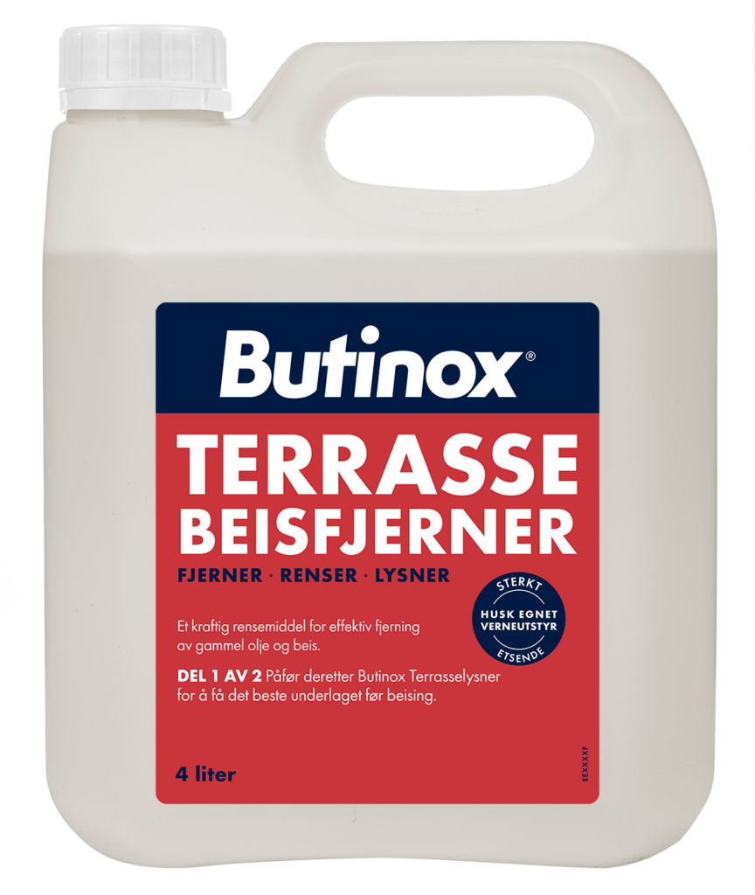
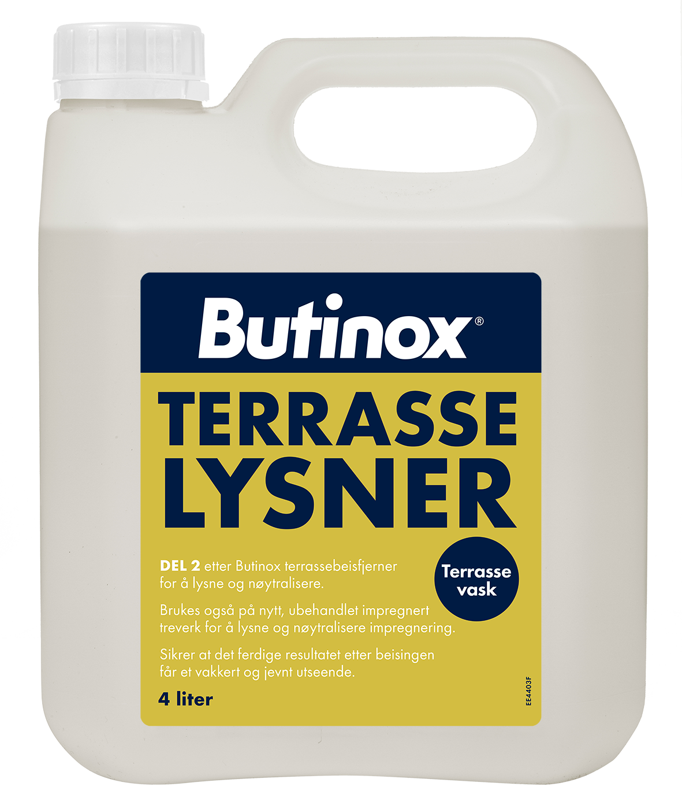

↩
Tilbake
Du må fjerne gammel beis fra terrassen din
Da anbefaler vi å bruke en terrassebeisfjerner

Butinox Terrassebeisfjerner
Effektiv fjerning av gammel beis
Skånsom mot treverket
Enkel påføring
For bedre og jevnere effekt, anbefaler vi også bruk av terrasselysner

Butinox Terrasselysner
Lysner og frisker opp treverket
Forbedrer inntrengningen av ny beis
Gir et jevnere sluttresultat
Se våre vannbaserte terrassebeis!
Se våre oljebaserte terrassebeis!